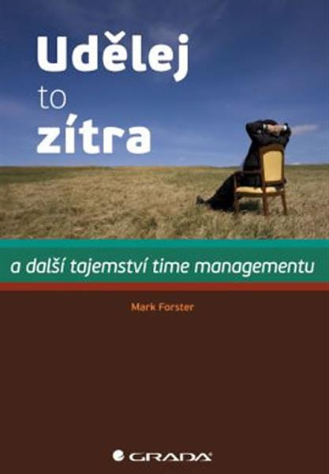

"Udělej to zítra" a další tajemství time managementu
Autor: Mark Forster
Jak snadno zvládat úkoly, které neustále přibývají? Jak se soustředit pouze na jednu věc a rychle ji dotáhnout do konce? Jak omezit stres a mít dobrý pocit ze své práce? Jak opravdu dosahovat svých cílů, a ne pouze hodně pracovat? Nejen na tyto otázky ale i na mnoho dalších najdete odpovědi v knize Marka Forstera.
Mnoho důležitých rad

Uznávaný autor a poradce v knize odkrývá tajemství time managementu, která skutečně fungují. Díky ní objevíte řadu nových zásad a jednoduchých principů, jež vám pomohou zvládnout to, co potřebujete. Nechejte si poradit, jak v pracovní době stihnout nutný objem práce a přitom nepodlehnout despotickému diktátu "naléhavých" e-mailů, telefonátů a podobných neplánovaných vyrušení. Naučte se, jak si stanovit priority, jak si organizovat práci, efektivně využívat čas a plnit cíle v rámci reálně nastavených termínů.
Jaké metody doporučuje?
Autor doporučuje například metodu uzavřených seznamů, sdružování stejnorodých činností, práci v kratších blocích apod. Klíčová myšlenka knihy pak vychází z jednoduché zásady, že nejdůležitější je umění stanovit si pracovní priority a nepřikládat úkolům větší důležitosti, než si zaslouží. To vám umožní si úkoly "naplánovat na zítra" a pak je skutečně splnit.
Kdo je autor?
Mark Forster vede vlastní firmu, která se zaměřuje na pořádání seminářů, workshopů a poskytování koučinkových služeb v oblasti time managementu a osobní výkonnosti. Své služby nabízí ředitelům velkých společností, manažerům, drobným podnikatelům i lidem z různých profesí pracujících na volné noze. Je rovněž autorem knihy Jak si splnit své sny i bestselleru Jak vše stihnout a ještě mít čas si hrát.
Zdroj: http://www.kosmas.cz